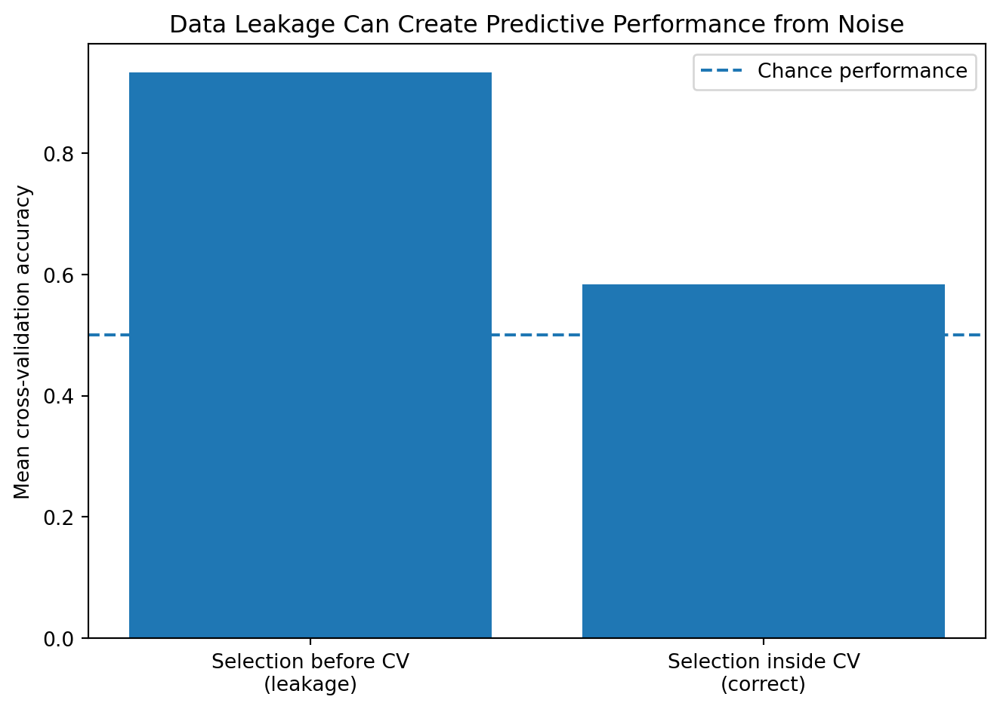

Show code
import numpy as np
import matplotlib.pyplot as plt
from sklearn.feature_selection import SelectKBest, f_classif
from sklearn.linear_model import LogisticRegression
from sklearn.model_selection import StratifiedKFold, cross_val_score
from sklearn.pipeline import Pipeline
from sklearn.preprocessing import StandardScaler
rng = np.random.default_rng(42)
n_observations = 120
n_features = 5000
X = rng.normal(size=(n_observations, n_features))
y = rng.integers(0, 2, size=n_observations)
cv = StratifiedKFold(
n_splits=5,
shuffle=True,
random_state=42
)
# Wrong: feature selection sees every label before cross-validation.
selector = SelectKBest(f_classif, k=20)
X_leaked = selector.fit_transform(X, y)
leaked_model = Pipeline([
("scaler", StandardScaler()),
("classifier", LogisticRegression(max_iter=3000))
])
leaked_scores = cross_val_score(
leaked_model,
X_leaked,
y,
cv=cv,
scoring="accuracy"
)
# Correct: selection is fitted only on each training fold.
correct_model = Pipeline([
("selector", SelectKBest(f_classif, k=20)),
("scaler", StandardScaler()),
("classifier", LogisticRegression(max_iter=3000))
])
correct_scores = cross_val_score(
correct_model,
X,
y,
cv=cv,
scoring="accuracy"
)
results = [
leaked_scores.mean(),
correct_scores.mean()
]
plt.figure(figsize=(7, 5))
plt.bar(
["Selection before CV\n(leakage)", "Selection inside CV\n(correct)"],
results
)
plt.axhline(
0.5,
linestyle="--",
label="Chance performance"
)
plt.ylabel("Mean cross-validation accuracy")
plt.title("Data Leakage Can Create Predictive Performance from Noise")
plt.legend()
plt.tight_layout()
plt.show()
print("Leaked scores:", leaked_scores)
print("Correct scores:", correct_scores)
Leaked scores: [1. 0.91666667 0.91666667 0.91666667 0.91666667]
Correct scores: [0.625 0.5 0.625 0.58333333 0.58333333]